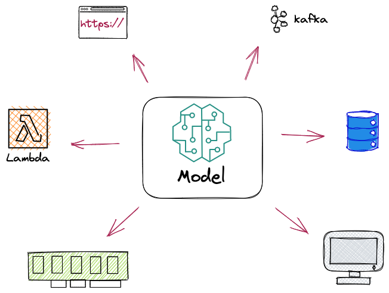

How are machine learning models deployed?

Introduction
Deploying machine learning models is an essential step in applying data science to real-world problems. After training a model, the next step is to deploy it in a way that allows it to be used by others. But how do you deploy a data science model, and what are the best ways to do it?
There are different ways to deploy machine learning models, and the choice of deployment method depends on the specific requirements of a project. In this blog post, we will explore at a high-level the most common conceptual deployment methods for data science models and their use cases.
This post will not go into any platform specific details but rather create conceptual buckets to understand the different ways to deploy a model. Please comment if you believe any are missing.
API Deployment
One common way to deploy machine learning models is through building an API. This involves creating an API that can receive input data, pass it through the model, and return the predicted output. This approach is suitable for models that require real-time prediction and easy integration with other systems. API deployment is also useful when working with applications that require continuous integration and deployment.
Using FastAPI is a great way to quickly build a working API with built-in documentation. I have used this to quickly create an API to serve predictions to other clients/services within the company. For instance, a mobile or webapp could call the API for a predicted price to display to a user. this makes it easy to serve predictions to multiple device types without creating separate model deployment code for each.
Batch Processing
Another approach to deploying machine learning models is batch processing. In this method, the model is run on a schedule, such as daily or weekly, to process large amounts of data. Batch processing is best suited for models that need to process large amounts of data or for models that don’t require real-time predictions.
The batch processing method is underappreciated in my opinion. The fact is that you don’t need real-time predictions to get value out of machine learning. An excellent use-case I have used in the past is for data enrichment. This can be many things: cleaning up data, filling in missing values, creating embeddings for other models to use, or creating forecasts. For instance, you may publish a monthly or quarterly forecast for users of your product. These forecasts would be batch processed and stored in a database for further use.
Messaging Service
Messaging service deployment involves using a messaging service, such as RabbitMQ or Kafka, to handle asynchronous tasks. The model is deployed as a worker that listens to a queue and processes the data. This approach allows for easy scaling and real-time prediction.
Depending on the infrastructure set up at your company, this might be an easy option for model deployment. It isn’t hard to set up a Kafka consumer to listen for requests and then publish those results by using a producer. The one caveat with this method is if the message you’re consuming from doesn’t have all the data your model needs, getting that data may make the service more complicated or slower to respond. For instance, if you want to add regional weather data you might need to use a slow database query before generating the producer message. An alternative is to pre-load the data into a caching database like Redis for a quick lookup. However, this complicates the deployment and adds another layer of maintenance and management.
Serverless
Serverless deployment involves using a serverless platform, such as AWS Lambda or Google Cloud Functions, to deploy the model. This approach allows for low-cost, easy scaling and eliminates the need for server management. This deployment method is useful for organizations that need to deploy models quickly and at a low cost.
While I have not deployed a model using a serverless platform, there are many great tutorials out there that show how easy it can be. Here are a couple: one using Google Cloud Functions, and using AWS Lambda. Of course the platforms themselves have tutorials too (AWS, GCP).
Embedded Devices
Deploying the model on edge devices, such as IoT devices or mobile phones, is known as embedded device deployment. This approach is suitable for models that require low latency predictions or models that need to operate in low-bandwidth environments.
While I’m fascinated by edge devices like RaspberryPi, I have yet to train and deploy a model on one. RaspberryPi Machine Learning Simply Explained is a fun tutorial that turns a RaspberryPi into something… more.
Desktop and Web-based Applications
Desktop application deployment involves deploying the model as a standalone application that runs on a user’s desktop or laptop. This approach is suitable for models that require a user-friendly interface or models that need to be used by a small number of users. Web-based application deployment involves deploying the model as a web application, where users can interact with the model through a browser. This approach is suitable for models that need to be accessible to a large number of users.
While technically another option to deploy a machine learning model, I think this deployment method is much less common. Realistically, a webapp likely calls a backend API for the predictions rather than being embedded into the app itself, but maybe I’m wrong here.
Hybrid Mode
Lastly, machine learning deployment can employ a mix of two or more(?) methods. Hybrid deployment involves deploying the model in multiple ways, such as an API, batch processing, and messaging service. This approach allows organizations to take advantage of the benefits of different deployment methods and is suitable for models that have different use cases. This could be for a variety of reasons such as different entry-points or different levels of quality. For instance, there are dictation software with online and offline modes. The online is better but requires a sufficient online connection.
Conclusion
There are different ways to deploy data science models, and the choice of deployment method depends on the specific requirements of a project. The deployment method chosen must provide an optimal balance between cost, latency, and scalability. Personally, I have deployed using APIs, a messaging service, and batch processing. Have you deployed a data science model before? If so, what method did you use, and how did it work out for you? Let us know in the comments below.